校园网约车 · 舒腰健脊 · 登山协会
微信小程序展示合集
三个小程序覆盖校园出行、康复健康管理和社团活动服务，展示需求拆解、页面流程、状态联动与可运行 Demo 的产品工程能力。
微信小程序uni-app / Vue 3产品原型状态联动
统一产品链路
需求拆解把真实场景拆成角色、任务和页面入口。
数据建模用本地 Mock / storage 承接订单、训练、随访和活动数据。
页面实现按主流程组织首页、详情、表单、记录和个人中心。
交互闭环让创建、加入、打卡、评价、随访和报名动作产生状态联动。
校园网约车项目
演示视频
覆盖找单、发起拼单、订单详情、行程管理和历史评价。
校园出行拼车闭环
以校园到机场/高铁站等高频出行场景为主线，把发起拼单、路线筛选、费用预估、成团进度和个人行程串成完整流程。
- 首页承接路线与时段筛选。
- 订单页展示座位、费用和成团状态。
- 个人中心保留常用路线和历史评价。
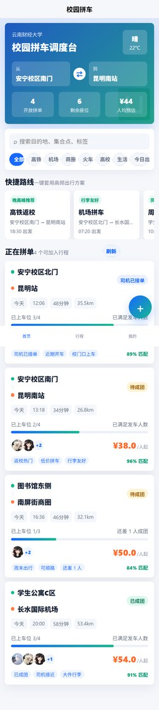
拼车调度台
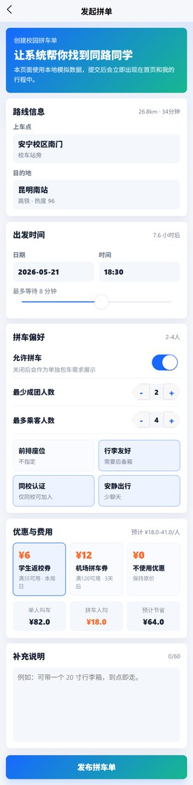
发起拼单
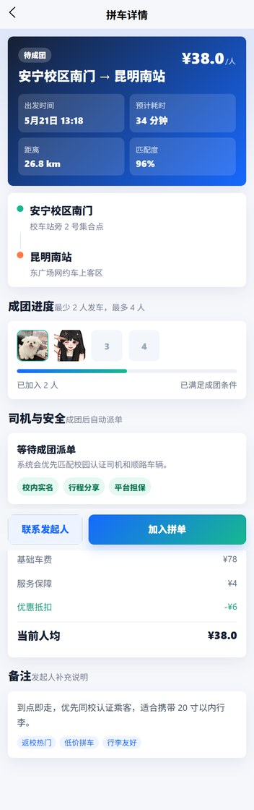
订单详情
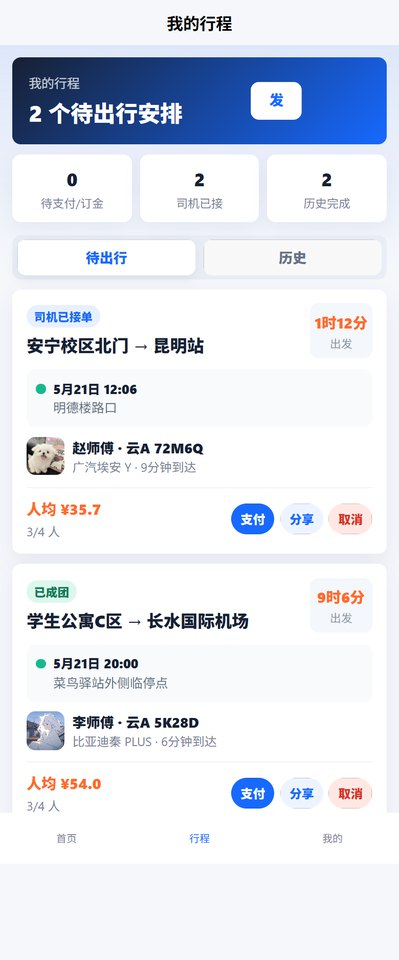
我的行程
舒腰健脊 App / 小程序
演示视频
患者端与诊疗师端双角色健康管理原型。
康复训练与随访管理
围绕腰背健康管理构建患者端训练、评估、随访和医生端工作台，让健康记录、训练方案与随访沟通形成连续链路。
- 患者端聚焦训练课程、问诊评估和个人记录。
- 医生端聚焦方案、患者管理和随访事项。
- 双角色信息结构清晰，适合展示医疗健康类产品原型能力。
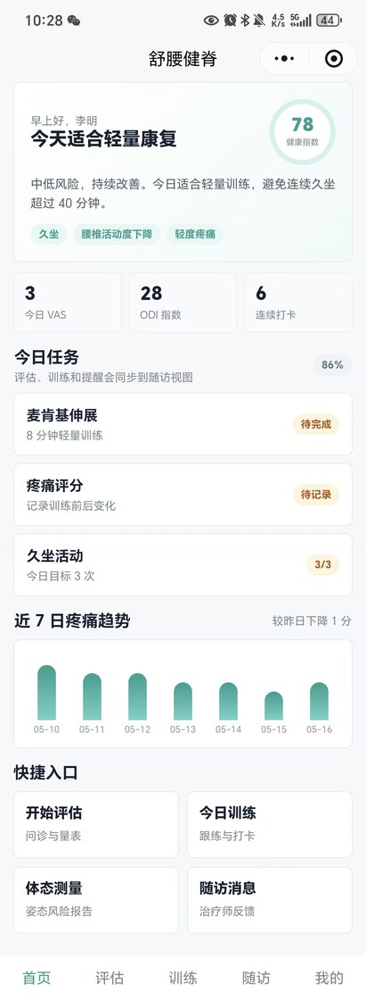
患者端首页
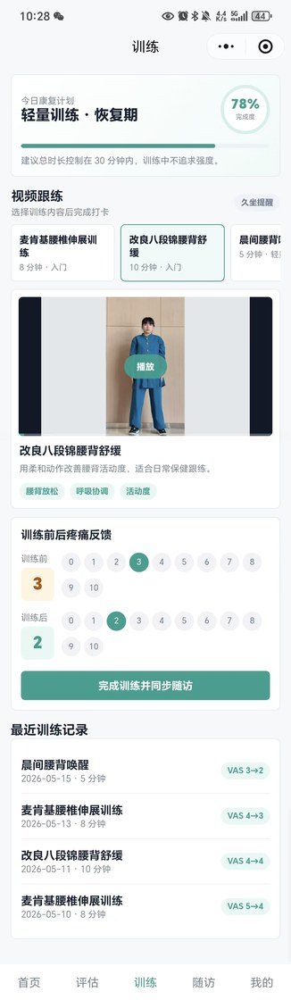
训练课程
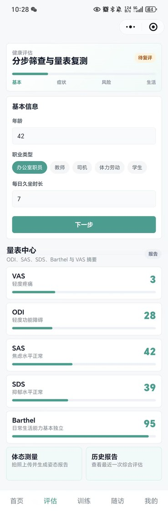
问诊评估
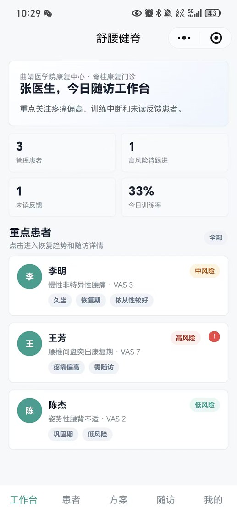
医生工作台
登山协会小程序
演示视频
围绕社团活动、公告、服务和个人中心组织信息展示。
社团活动与服务展示
以活动浏览、协会公告、服务入口和个人页为核心，展示轻量组织类小程序的信息架构、视觉落地和内容组织能力。
- 首页突出社团形象和活动入口。
- 活动页用于报名、查看行程与了解活动规则。
- 服务与公告模块承接社团运营信息。
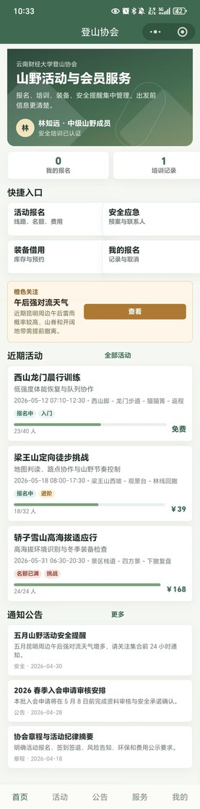
首页
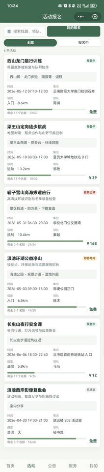
活动
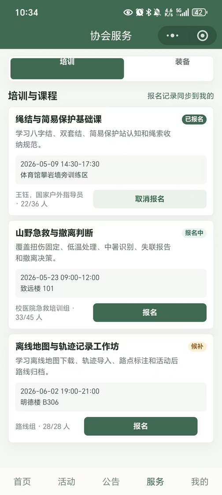
服务
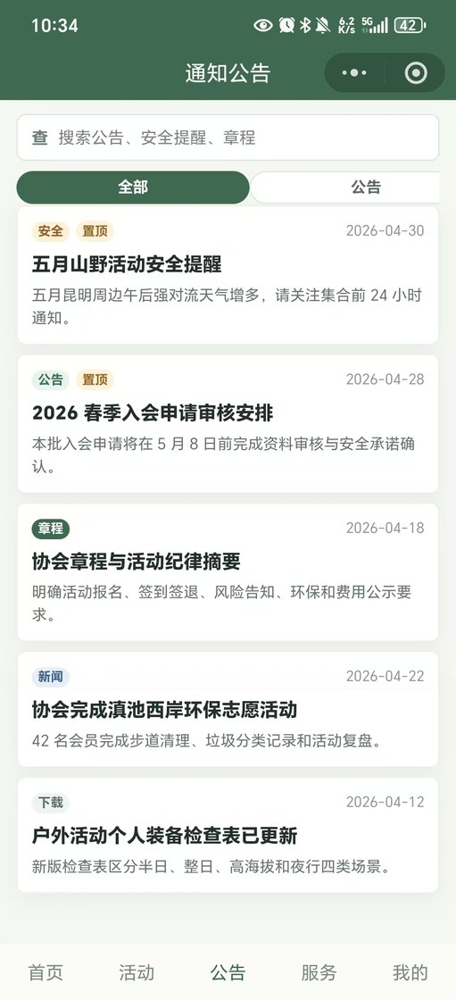
公告